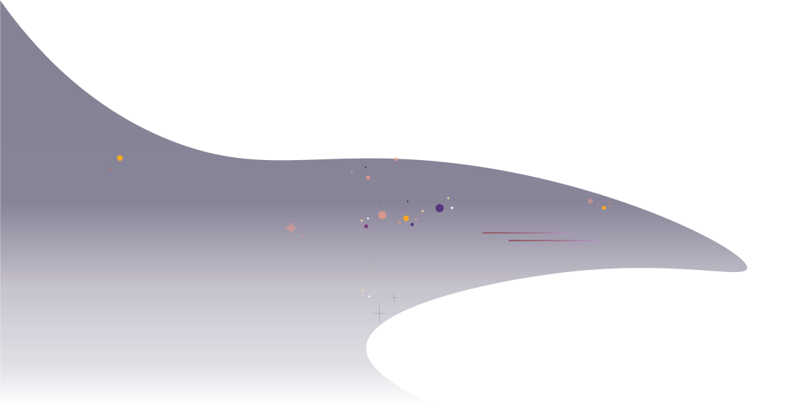
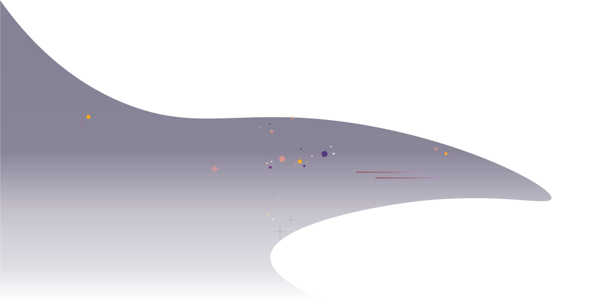
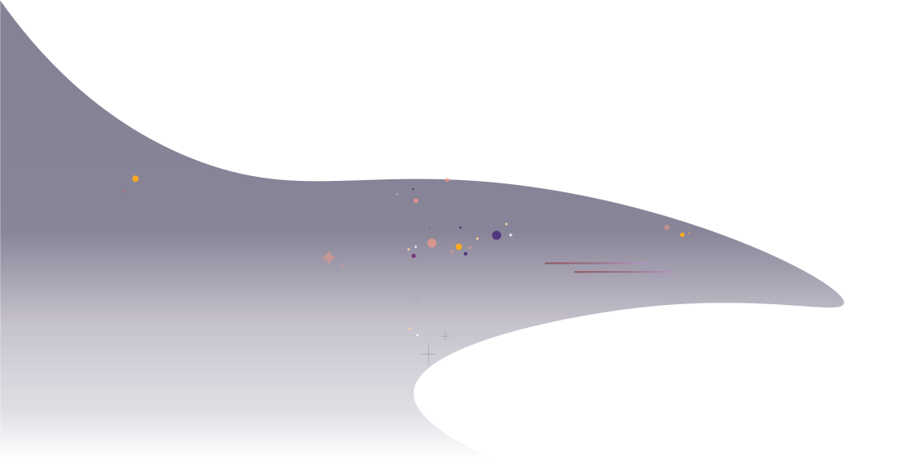

Sources of radiation include galactic cosmic rays,
solar energy particles, and the Earth’s radiation belt.
RADIATION
In 2021, this infographic was awarded a Registered Graphic Designers, RGD In-House award for Science Communication Design. This artwork
illustrates the sources, the types, and the intensity of the background radiation that is present in natural environments of interest for the
scientist-users of TRIUMF.
The TRIUMF Irradiation Facilities (PIF & NIF) operate beamline infrastructure that enables commercial and research use of protons and neutrons
beams of various energies
to a wide community of users from around the world.
Electronic components can be damaged and fail when energetic particles in the environment interact with the atoms of the material in the components.
The proton and neutron beams of the TRIUMF Irradiation Facilities reproduce the natural environment but at a much higher intensity, to quickly check
if and how electronic components are likely to fail. For example, the total radiation dose of a 5-year space mission can be achieved in just a few
hours, without needing to go to space!For nearly 25 years, one of these beamlines was used to extract a lower energy proton beam from TRIUMF’s main
cyclotron for the proton radiotherapy clinical treatment of severe cases of ocular melanoma, in collaboration with BC Cancer and UBC Ophthalmology.
This was the first clinical use of proton beams for cancer treatment in Canada.

Deep Space
Deep space up to 300,000 particles/cm2/h, mainly protons with some particles and
heavier ions.
Geosynchronous Orbit
Up to 500,000 particles/cm2/h, mainly electrons and protons.
Low Earth Orbit
Up to 100,000 particles/cm2/h, mainly protons and electrons.
 En
Fr
En
Fr

 
